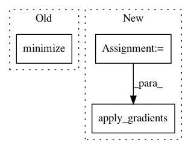

c4225216a131206747cdf5ca05cb1d4ef6fa3ac9,deepplantphenomics/deepplantpheno.py,DPPModel,__assemble_graph,#DPPModel#,441
Before Change
self.__graph_ops["optimizer"] = tf.train.AdagradOptimizer(self.__learning_rate).minimize(self.__graph_ops["cost"])
self.__log("Using Adagrad optimizer")
elif self.__optimizer == "Adadelta":
self.__graph_ops["optimizer"] = tf.train.AdadeltaOptimizer(self.__learning_rate).minimize(self.__graph_ops["cost"])
self.__log("Using Adadelta optimizer")
elif self.__optimizer == "SGD":
self.__graph_ops["optimizer"] = tf.train.GradientDescentOptimizer(self.__learning_rate).minimize(self.__graph_ops["cost"])
self.__log("Using SGD optimizer")
After Change
// Compute gradients, clip them, the apply the clipped gradients
gradients, variables = zip(*self.__graph_ops["optimizer"].compute_gradients(self.__graph_ops["cost"]))
gradients, global_grad_norm = tf.clip_by_global_norm(gradients, 5.0) // need to make this 5.0 an adjustable hyperparameter
self.__graph_ops["optimizer"] = self.__graph_ops["optimizer"].apply_gradients(zip(gradients, variables))
if self.__problem_type == definitions.ProblemType.CLASSIFICATION:
class_predictions = tf.argmax(tf.nn.softmax(xx), 1)
correct_predictions = tf.equal(class_predictions, tf.argmax(y, 1))
In pattern: SUPERPATTERN
Frequency: 3
Non-data size: 3
Instances
Project Name: p2irc/deepplantphenomics
Commit Name: c4225216a131206747cdf5ca05cb1d4ef6fa3ac9
Time: 2018-05-22
Author: nicoreekohiggs@gmail.com
File Name: deepplantphenomics/deepplantpheno.py
Class Name: DPPModel
Method Name: __assemble_graph
Project Name: arnomoonens/yarll
Commit Name: 41024c61c0737b1beaea8fff8e00a947d6b6ee9b
Time: 2017-02-09
Author: x-006@hotmail.com
File Name: knowledge_transfer.py
Class Name: KnowledgeTransferLearner
Method Name: build_networks
Project Name: HyperGAN/HyperGAN
Commit Name: 9d6d46dd83f16ea0df9e084f970cda1ce9132757
Time: 2016-10-22
Author: martyn@255bits.com
File Name: lib/trainers/slowdown_trainer.py
Class Name:
Method Name: initialize